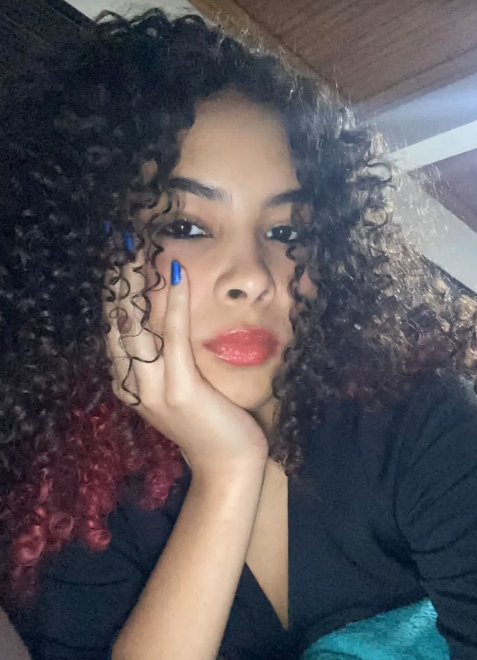

The Maze Runner
Maze Runner: Correr ou Morrer é um filme inspirado em um
livro que segue Thomas, um adolescente que acorda sem memória na Clareira,
um espaço
aberto cercado por um
labirinto gigante e perigoso. Junto a outros garotos, ele
precisa sobreviver
e encontrar uma saída, enquanto enfrenta
criaturas mortais e paredes que mudam diariamente. A chegada de
uma garota com uma mensagem muda a rotina do grupo.
Thomas

Newt

Minho

Gally

Alby

Chuck

Brenda

Teresa